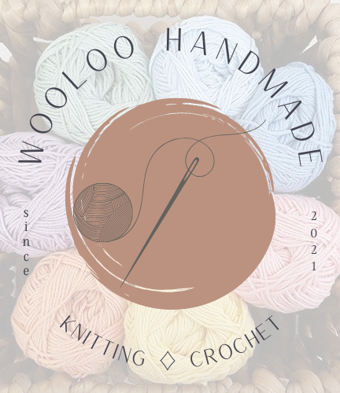

Bienvenido/a al mundo del crochet!
En éste sitio vas a poder encontrar desde tips, tutoriales e ideas de inspiración para comenzar a crear tus propios proyectos, así como también nuestros productos.
En éste sitio vas a poder encontrar desde tips, tutoriales e ideas de inspiración para comenzar a crear tus propios proyectos, así como también nuestros productos.